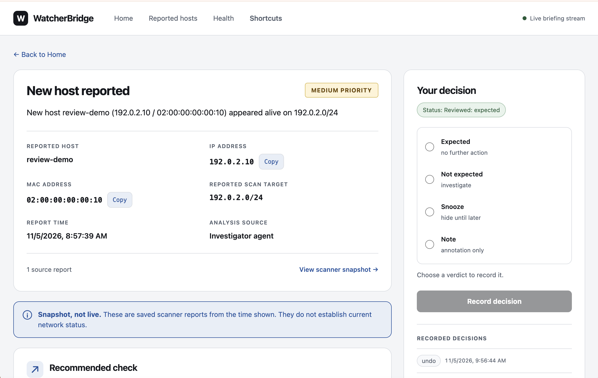

01 / Scanner boundary
Start with a signed report.
The scanner owns discovery and host identification. WatcherBridge verifies the webhook signature and checks for duplicate deliveries.
- Event
- host.appeared
- Target
- 192.0.2.0/24
- Signature
- HMAC verified
Local network change review
WatcherBridge receives signed reports from your network scanner and turns them into prioritized briefings with evidence and a next check.
01 / Architecture
A scanner reports a host appearing on a sample network. Step through what happens from delivery to operator review.
Synthetic walkthrough
01 / Scanner boundary
The scanner owns discovery and host identification. WatcherBridge verifies the webhook signature and checks for duplicate deliveries.
02 / Local storage
The bridge preserves the signed report in SQLite. Related reports can be grouped for a briefing while retaining their links to the original evidence.
03 / Optional AI
Local rules set the priority floor. If configured, AI can explain the change using redacted context and may suggest a one-level increase up to high. A final leak check guards provider requests. If the model fails, the bridge stores a marked fallback.
When enabled, the AI investigator can use read-only tools to look up retained scanner reports about host history, services, and similar changes. The briefing can cite supporting evidence and show where lookups were incomplete.
04 / Operator decision
Open the briefing, check the saved report, and record your decision. Mark the change expected or unexpected, snooze it, or add a note.
02 / Review workflow
Review what the scanner reported, see why it was prioritized, and record your decision in the local dashboard.

WatcherBridge groups qualifying appearance or disappearance reports into incidents. Optional AI summaries for closed incidents show how many briefings were sampled or omitted, label hypotheses, and can cite member briefings.
By default, three matching, eligible “expected” decisions can trigger a rule proposal. An operator decides whether to approve it.
See the Act, Review, or Quiet verdict beside each source’s coverage. A source’s liveness stays unknown until it sends a heartbeat.
03 / Try WatcherBridge
The reviewer guide uses a synthetic sender. You can follow it without a network scanner.